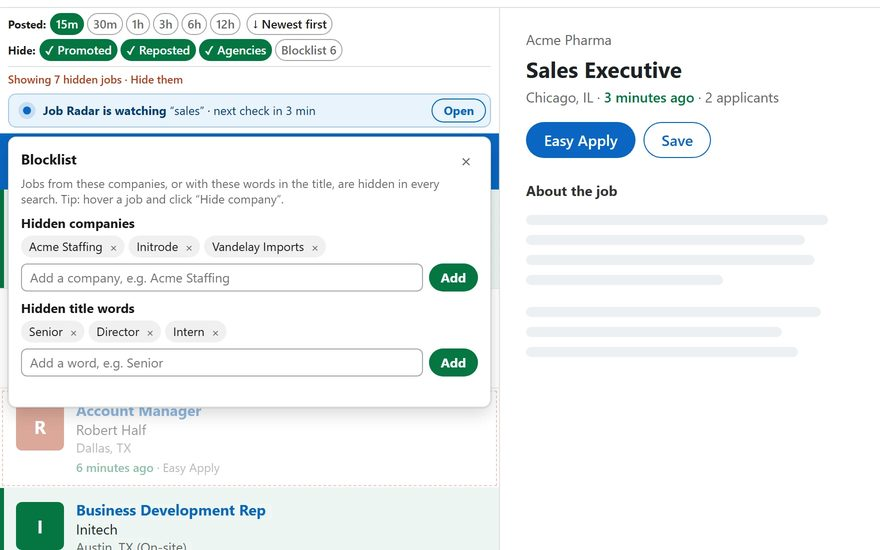

You search for fresh jobs and half the list is Promoted posts and staffing agencies. LinkedIn won't let you get rid of them. Here is how to spot them, how to filter them out by hand, and how to hide them automatically.
How to spot them
| Type | What to look for |
|---|---|
| Promoted | The word Promoted at the bottom of the job card. It's a paid ad and can be weeks old. |
| Staffing agency | The company name is a recruiter or staffing firm, not the employer, and the description often says "our client". |
How to filter out promoted jobs on LinkedIn
-
Dismiss jobs with the ✕
Every job card has a ✕ in the corner. Click it and LinkedIn hides that job from your searches. It works, but only one job at a time, and new promoted jobs keep coming. (EarlyApply hides all of them at once.)
-
Exclude words in your search
LinkedIn's job search understands
NOT. Add it to your keywords to drop jobs that mention a word, for example:data analyst NOT staffing NOT recruitmentThis searches the whole job text, so it can also remove good jobs that just mention the word. Use it carefully.
-
Keep your search recent
Pick Past 24 hours in Date posted so old jobs drop out. Logged in, LinkedIn treats anything shorter as 24 hours and has no Most recent sort. For a shorter window, see how to see LinkedIn jobs posted in the last hour. Promoted jobs can still appear.
Seeing old jobs marked "Reposted" too? That is a different problem: see how to filter out reposted jobs on LinkedIn.
Why it's worth hiding them
Promoted jobs look new but often aren't. A paid post can be weeks old and already have hundreds of applicants, and an agency post might not even be a real opening yet. Every one of them takes a slot on your screen that a fresh job could use, and if you want to be one of the first applicants, they slow you down.
Remove promoted jobs in one click with EarlyApply
EarlyApply is a free Chrome and Edge extension that adds the missing filters right on the LinkedIn jobs page.
- Hide Promoted and too-old jobs
- Hide known staffing agencies, and any company with one click. It stays hidden in every future search
- Block job titles by word, like "Senior" or "Intern", for good
- "5 hidden · show" lets you peek at what was filtered

Questions
Can I turn off promoted jobs on LinkedIn?
No. LinkedIn has no setting or filter for promoted jobs, even with Premium. You can dismiss them one by one, or use a browser extension that hides them for you.
Why are promoted jobs older than my Date posted filter?
Promoted jobs are paid placements. LinkedIn sometimes mixes them into results even when they don't match your time filter, so always check the "posted X ago" line.
How do I stop seeing jobs from staffing agencies?
LinkedIn has no agency filter. You can add words like NOT staffing to your keywords, dismiss agency jobs one by one, or use an extension such as EarlyApply that hides known staffing agencies.
Does LinkedIn Premium remove promoted jobs?
No. Premium adds tools such as applicant insights and InMail, but it has no setting to hide promoted jobs. Dismiss them with the ✕ or use an extension that hides them.
How can I tell if a LinkedIn job is promoted?
Look for the word Promoted at the bottom of the job card. It is a paid placement and can be weeks old.
Are promoted jobs fake?
No. They are real jobs, but the company paid for the placement. They can be older than your filter says, so check the "posted X ago" line before you apply.